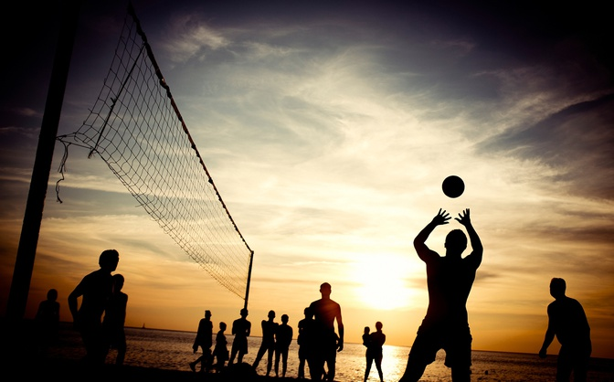
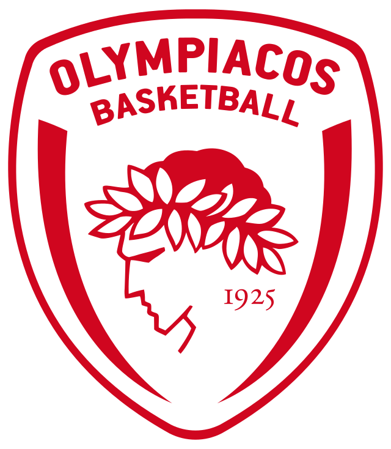
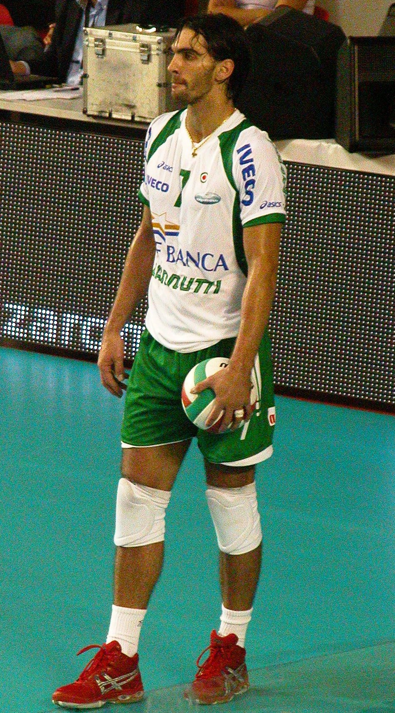
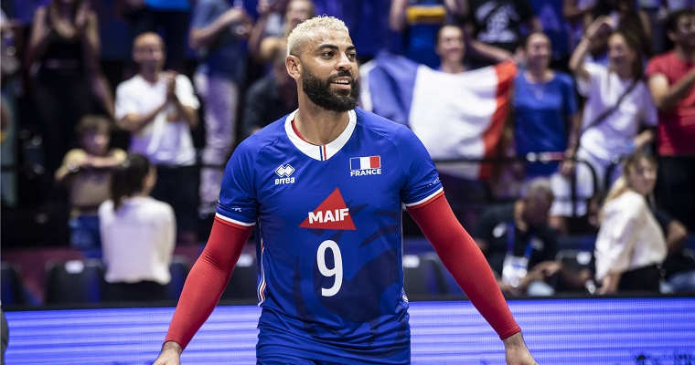

Волейбол
Волейбол – командний вид спорту, в якому дві команди змагаються на майданчику, розділеному сіткою. Метою гри є перебити м'яч через сітку таким чином, щоб він торкнувся майданчика суперника, і запобігти аналогічній спробі з боку команди-суперника.
Коротка історія волейболу
Винахідником волейболу вважають Вільяма Джона Моргана, викладача фізичного виховання коледжу Асоціації молодих християн (YMCA) в місті Голіок (штат Массачусетс, США). 9 лютого 1895 року в спортивному залі він підвісив тенісну сітку на висоті 197 см і його учні, число яких на майданчику не обмежувалося, стали перекидати через неї баскетбольний м'яч. Морган назвав нову гру «мінтонет». Роком пізніше гру демонстрували на конференції коледжів асоціації молодих християн у Спрингфілді і за пропозицією професора Альфреда Т. Гальстеда отримала нову назву — «волейбол». У 1897 році були опубліковані перші правила волейболу. Загальні правила гри сформувалися в 1915—1925 роках. У країнах Америки, Африки, Європи практикувався волейбол з шістьма гравцями на майданчику, в Азії — з дев'ятьма або дванадцятьма гравцями на майданчику 11×22 м без зміни позицій гравцями під час матчу. У 1922 році проведені перші загальнонаціональні змагання — у Брукліні відбувся чемпіонат YMCA за участю 23 чоловічих команд. У тому ж році була утворена федерація баскетболу і волейболу Чехословаччини — перша у світі спортивна організація з волейболу. У другій половині 1920-х років виникли національні федерації Болгарії, СРСР, США та Японії. У той же період формуються головні аспекти техніки — подача, приймання, нападний удар і блок. На їх основі виникає тактика командних дій. У 1930-і роки з'явилися груповий блок і страхування, варіювалися нападні й обманні удари. У 1936 році на конгресі Міжнародної федерації з гандболу, що проводився в Стокгольмі, делегація Польщі виступила з ініціативою організувати технічний комітет з волейболу як частину федерації з гандболу. Утворили комісію, до якої увійшли 13 країн Європи, 5 країн Америки і 4 країни Азії. Члени цієї комісії як основні прийняли американські правила з незначними змінами: виміри проводили в метричних пропорціях, м'яча можна було торкатися всім тілом вище пояса, після того, як торкнувся м'яча на блоці, гравцю було заборонено повторне торкання поспіль, висота сітки для жінок — 224 см, зона подачі була суворо обмежена.
Првила гри
Гра ведеться на прямокутному майданчику розміром 18х9 метрів. Висота сітки для чоловіків — 2,43 м, для жінок — 2,24 м. Майданчик розділений посередині сіткою. Грають сферичним м'ячем колом 65—67 см, вагою 260—280 г. Кожна з двох команд складається максимум з 12-ти гравців, а на полі одночасно перебувають 6. Мета гри — ударом добити м'яч до ігрової поверхні майданчика половини суперника або примусити його помилитися. Гру починають введенням м'яча в гру за допомогою подачі. Після введення м'яча в гру подачею та успішного розіграшу подача переходить до тієї команди, яка здобула очко. Майданчик за кількістю гравців умовно розділено на 6 зон. Після кожного переходу права подачі переходять від однієї команди до іншої унаслідок розіграшу очка, гравці переміщаються в наступну зону за годинниковою стрілкою. Виконує подачу гравець, який унаслідок останнього переходу переміщається з другої в першу зону. Подають із зони подачі за задньою лінією ігрового майданчика. Завдання гравця, що подає — відправити м'яч на половину суперника. Доти, поки гравець не торкнеться м'яча під час подачі, жодна частина його тіла не повинна торкнутися поверхні майданчика (надто під час подачі у стрибку). У польоті м'яч може торкнутися сітки, але не має торкатись антен або їх уявного продовження вгору. Якщо м'яч торкнеться поверхні ігрового майданчика, команді, що подавала, зараховують очко. Якщо гравець, який подавав, порушив правила або відправив м'яч до ауту, то очко зараховують команді, що приймала. Не дозволено блокувати м'яч під час подачі, перериваючи його траєкторію над сіткою. Зазвичай приймають м'яч гравці, які стоять на задній лінії, тобто в 5, 6, 1 зонах. Однак прийняти подачу може будь-який гравець. Гравцям команди, яка приймає подачу, дозволено зробити три торкання і максимум після третього перевести м'яч на половину супротивника. Обробляти м'яч під час приймання можна в будь-якому місці майданчика і вільного простору, але тільки не на половині майданчика суперника. При цьому, якщо доводиться передачею переводити м'яч назад на свою ігрову половину, друга передача з трьох не може проходити між антенами, а обов'язково має проходити поза ними. Під час приймання не дозволено затримувати м'яч під час його оброблення, хоча приймати м'яч можна будь-якою частиною тіла. Зазвичай при успішному прийомі м'яч приймають гравці задньої лінії (1-е торкання), доводять до зв'язкового гравця (2-е торкання), який передає м'яч гравцеві атаки, як правило, діагональному нападнику або догравальнику (3-е торкання). При ударі м'яч, повинен пройти над сіткою, але в просторі між двома антенами. При цьому м'яч може зачепити сітку, але не повинен зачіпати антени або їхнього уявного продовження вгору. Гравці передньої лінії можуть атакувати з будь-якої точки майданчика. Гравці задньої лінії перед атакою повинні відштовхуватися за спеціальною триметровою лінією. Ліберо заборонено атакувати, тобто завдавати удару по м'ячу, який перебуває вище за лінію верхнього краю сітки. Блок може бути одиночним або груповим (подвійним, потрійним). Дотик блоку не вважають за одне з трьох торкань. Блокувати можуть тільки ті гравці, що стоять на передній лінії, тобто в зонах 2, 3, 4. Прийом атакувального удару відрізняється від прийому подачі, оскільки в захисті завжди беруть участь усі 6 гравців, що є на майданчику. Їхня мета — залишити м'яч у грі і по можливості довести його зв'язуючому. Захист може бути ефективним тільки в разі узгоджених дій усіх гравців команди, тому були розроблені схеми гри в захисті, з яких прижилися тільки дві: «кутом назад» і «кутом уперед». В обох схемах крайні захисники стоять по бічних лініях, виходячи з-за блоку в 5-6 метрах від сітки, а ось захисник у 6-й зоні, відповідно до назви схеми, грає або безпосередньо позаду блоку, або за лицьовою лінією (грає далекі рикошети від блоку). Ліберо-гравці цього амплуа не можуть брати участь у блоці, подавати, виконувати удар у нападі по м'ячу, який перебуває повністю вище верхнього краю сітки. Форма ліберо повинна відрізнятися від форми інших гравців. Дозволяється замінювати ліберо необмежену кількість разів, не ставлячи до відома суддю. Позаяк ліберо не має права атакувати і блокувати, він зазвичай перебуває на задній лінії, змінюючись позицією з гравцями, яких вигідно тримати на передній лінії, наприклад, з центральним блокуючим. Регламент-Волейбольна партія не обмежена в часі і триває до 25 очок. При цьому, якщо перевага над супротивником не досягла 2 очок, партія триватиме до тих пір, поки не буде досягнута потрібна перевага. Матч триває до того, як одна з команд виграє три партії. У п'ятій партії (тай-брейк) рахунок ведеться до 15 очок. У кожній партії тренер кожної з команд може попросити два тайм-аути по 30 секунд. Додатково у перших 4 партіях призначаються технічні тайм-аути після досягнення однієї з команд 8 і 16 очок (по 60 секунд). У кожній партії тренер має право провести не більше 6 замін польових гравців (окрім ліберо).
Популярні клуби та команди
- Модена Італія
- Олимпиакос Греція
Відомі гравці
- Жіба (Бразилія) - один з найвідоміших волейболістів світу.
- Ервін Нгапет (Франція) - харизматичний та талановитий гравець.